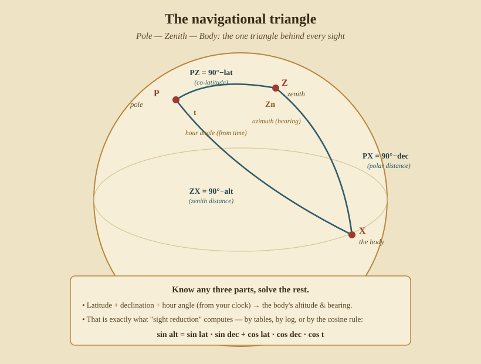

Finding Longitude
Longitude is the coordinate that broke navigators’ hearts for two thousand years. The principle is simple — longitude is the difference between your local time and Greenwich time, at 15° per hour (Part I, §5). The difficulty was always the same: how do you know Greenwich time in the middle of an ocean? This part gives the two historic answers — carry a clock, or read the sky as a clock — and the sight that turns local time into longitude.
9. The time sight — longitude from a clock
Suppose you already know your latitude (from a noon sight, Part II) and you carry Greenwich time (from a chronometer). Then a single altitude of the Sun, taken well away from noon, yields longitude. This is the classic time sight.
It works by solving the navigational triangle — the one triangle behind every celestial sight:

Measure the Sun’s altitude and correct it to Ho, noting the exact Greenwich time.
With latitude L and the Sun’s declination d (from the almanac), solve the
triangle for the meridian angle t — how far, in angle, the Sun stands from
your meridian:
cos t = (sin Ho − sin L · sin d) / (cos L · cos d)
t is your Local Apparent Time expressed as arc (15° = 1 hour). Compare it
with the Greenwich time of the sight, and the difference is your longitude.
Worked example. Afternoon sight. Your latitude (from the day’s noon sight) is L = 40° N; the almanac gives the Sun’s declination d = 15° N; your corrected altitude is Ho = 25° 00′; the chronometer read 19h 12m Greenwich (and the equation of time is ≈ 0 that day, so Greenwich apparent time ≈ 19h 12m).
cos t = (sin25° − sin40°·sin15°) / (cos40°·cos15°)= (0.4226 − 0.6428×0.2588) / (0.7660×0.9659) = 0.2563 / 0.7400 = 0.3463t = 69.7° = 4h 39m. It’s afternoon, so the Sun is west of you by 4h 39m → Local Apparent Time = 16h 39m.- Longitude = (Greenwich time − Local time) × 15°/h = (19h 12m − 16h 39m) = 2h 33m = 38.3° = 38° 15′ W (west, because your local time lags Greenwich).
One altitude, your known latitude, and the clock — and you have longitude. In practice a navigator took the Sun in the forenoon for a longitude line, again at noon for latitude, and worked the two together: the “day’s work” of Part IV.
Who & when. The method waited on the clock. The Longitude Act of 1714 set a £20,000 prize; John Harrison spent his life on it, his sea-clock H4 proving itself on a 1761–62 Atlantic crossing. Captain Cook carried Larcum Kendall’s copy K1 on his second voyage (1772–75) and came home converted. Nathaniel Bowditch’s American Practical Navigator (1802) put the time sight into the hands of every literate mate.
10. Lunar distances — the sky as a clock
Chronometers were, for decades, ruinously expensive and delicate. The alternative was to read Greenwich time off the sky itself, using the one fast-moving body up there: the Moon, which slides eastward against the stars by about half a degree an hour — roughly its own width. That makes the Moon a slow clock hand.
The method, called taking a lunar:
- With a sextant, measure the angular distance between the Moon’s edge and the Sun (by day) or a listed bright star (by night).
- “Clear” that distance of refraction and the Moon’s large parallax — a fussy calculation, since the Moon is near enough to shift with your viewpoint.
- The almanac tabulated the predicted Moon-to-body distance for every three hours of Greenwich time. Find where your cleared distance fits, and you have read Greenwich time out of the heavens — no clock aboard.
With Greenwich time in hand, longitude follows exactly as in the time sight. Lunars were laborious — an hour of calculation was normal — but they needed no costly instrument beyond a good sextant, and they kept working when a chronometer stopped.
Who & when. Johannes Werner proposed the idea in 1514; it became practical only when Tobias Mayer’s accurate lunar tables (1750s) let Nevil Maskelyne, Astronomer Royal, found the annual Nautical Almanac in 1767, which tabulated lunar distances against Greenwich time. Lunars and chronometers ran side by side until reliable, affordable clocks won out in the mid-1800s.
11. Which method, and the honest limits
- Chronometer + time sight — fast and simple once you trust the clock. The risk is the clock: navigators carried two or three, compared them daily, and kept a rate (how many seconds it gained or lost per day) to correct the reading.
- Lunars — a clock in the sky, independent of any machine, but slow and demanding of both sextant skill and arithmetic.
Both share one weakness the time sight makes plain: an error in your assumed latitude feeds straight into the longitude. That flaw is exactly what the line-of-position methods of Part IV were invented to remove — by treating a sight not as “a longitude” or “a latitude” but as a line you are somewhere on, and crossing two of them.